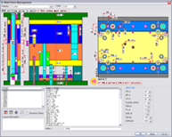
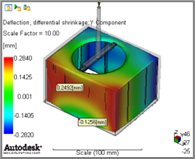
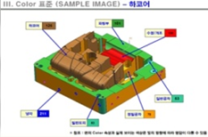
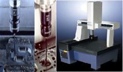
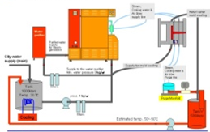
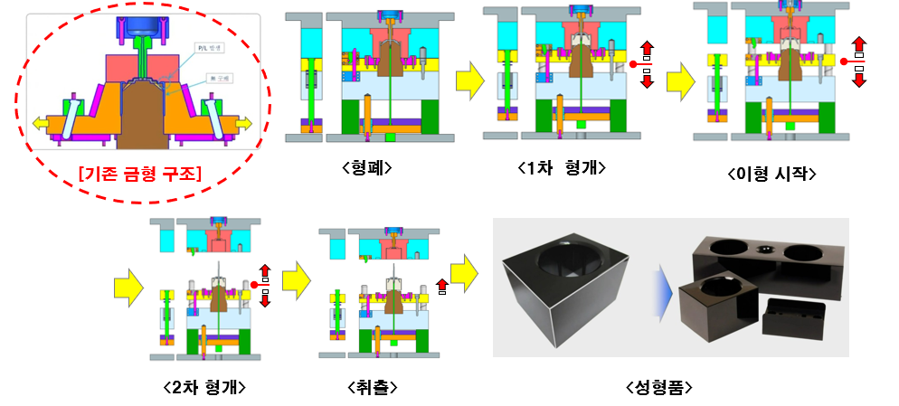

研究所
主要コアシステム
WOORI M-Techが保有するコアシステムをご紹介します

3D-CAD自動化システム
UG-NXとライブラリを使用したFull-3D自動設計

CAE射出成形解析システム
設計前CAEによる射出成形解析、流動、冷却解析など

CAM自動化システム
MS & NX CAMを活用したOne-Stop、切削パターンごとにDBによる自動計算

CMM & QMMSシステム(精密3次元測定および機上測定システム)
入荷品および加工品、3次元精密測定機による精密測定、加工完了後に設備上で測定して合否判定

スチームモールドシステム(高光沢スチームモールドシステム)
高光沢外観製品のための金型技術、外観品位品質向上
主要保有技術
1. 先端化技術
- 高品質製品量産技術
- 射出圧縮成形技術
- 標準化に基づくFull 3D自動化設計技術
- 徹底した金型履歴管理および顧客データ管理体系運営
2. CAE基盤技術
- CAE基盤リスク除去技術
3. ハイサイクル実現技術
- 拡散接合技術による3D冷却実現技術
- CAE冷却解析基盤でのサイクルタイム短縮技術
4. 精密加工技術
- 微細パターン加工技術
- 外観実現技術
- 微細放電技術
5. 寿命向上技術
- 金型温度管理による品質安定化および寿命向上技術
6. 新規開発技術
- ホットランナー金型システム (2021.11.26 特許出願中)
- 射出成形用金型 (2021.11.26 特許出願中)
- コアバック金型 (2022.08.30 特許出願中)
射出圧縮技術
(特許 第10-1352434号)
(特許 第10-1371351号)
ガラス製の自動車窓をプラスチック材料(PC)に置き換える必要性が求められています。 その理由は、重いガラスから軽いプラスチックに置き換えることで重量減少(50%)により、自動車から発生する汚染物質および炭素排出量の削減を実現することができます。 ( ⁕比重：ガラス - 2.4、プラスチック - 1.2 )

NTM技術
成形品の収縮率を利用して上部に隙間を発生させ、離型させる技術
- 素材による熱膨張、金型設計新技術適用、新構造開発、加工技術、試験射出
